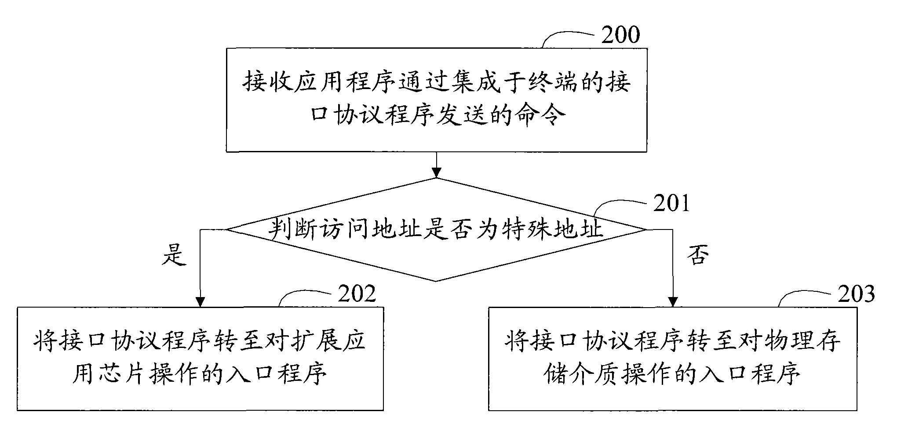

发明名称--一种智能存储卡的接口访问控制方法
| 申请号 | CN200810105961.3 | 申请日 | 2008.05.06 | ||
| 公开（公告）号 | CN101266538A | 公开（公告）日 | 2008.09.17 | ||
| IPC分类号 | G06F3/08 | 申请（专利权）人 | 普天信息技术研究院有限公司; | ||
| 发明人 | 廖泉;李春华;董琳;陶雄强;陈庆方;姜涌;曹会扬;张旭;廖剑; | 优先权号 |
摘要:
本发明公开了一种智能存储卡的接口访问控制方法。本发明将用于实现功能扩展的扩展应用芯片映射在物理存储介质的预设地址，使得存储卡控制器能够根据访问地址实现对扩展应用芯片的定位，保证了应用程序对扩展应用芯片的访问，从而能够支持存储卡的功能扩展。而且，本发明还可以判断应用程序是否有权限访问扩展应用芯片，从而提高了对扩展应用芯片访问的安全性。此外，当访问地址为扩展应用芯片映射的预设地址、但应用程序不具有访问权限时，仍允许应用程序访问物理存储介质中对应该预设地址的存储空间。这样，物理存储介质中对应映射有扩展应用芯片的预设地址的存储空间仍可用，从而提高了物理存储介质的利用率、并节省了硬件资源。
摘要附图:
